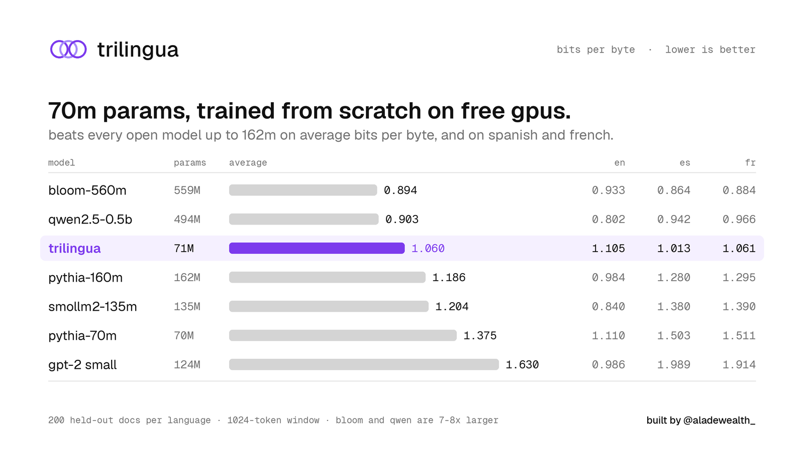

a 70m-parameter trilingual language model, trained from scratch on free gpus
i built a small english / spanish / french gpt end to end, with its own tokenizer, data pipeline, pretraining and fine-tuning, on kaggle t4s, and measured where it wins and where it doesn't.
question
can a 70m model trained from scratch on 1.25b tokens, with a tokenizer built for three languages, beat a much larger english-first model on spanish and french? and what does a tiny instruction-tuning pass cost?
what i expected going in:
- i expect a shared trilingual tokenizer to beat gpt-2 small on spanish and french bits-per-byte.
- i expect gpt-2 small to still win on english, since it saw far more english text.
- i expect fine-tuning on a small instruction set to raise validation loss a little.
- i expect a 70m model to be fluent but often factually wrong.
model
| field | value |
|---|---|
| parameters | 70.55m total (49.58m non-embedding) |
| architecture | decoder-only transformer, 10 layers, d_model 640, 10 heads, ffn 1728 (swiglu), rmsnorm, rope |
| context | 1,024 tokens |
| tokenizer | my own 32,768-token byte-level bpe, shared across en/es/fr, with language tags |
| flops per token | ~502m |
data
| language | source | train tokens | licence |
|---|---|---|---|
| english | fineweb-edu (huggingfacefw) | 650.0m | odc-by |
| spanish | fineweb2-hq (epfml) | 325.0m | odc-by |
| french | fineweb2-hq (epfml) | 325.0m | odc-by |
the mix is 50/25/25. about 2m held-out validation tokens per language. fine-tuning used cohereLabs/aya_dataset filtered to eng/spa/fra (apache-2.0) plus self-made 'continue this text' tasks, 1,500 per language.
method
pretraining: 2,385 steps at 524,288 tokens per step (1.25b tokens total), peak learning rate 1e-3 decaying to 1e-4, on 2× tesla t4 with ddp and torch.compile, in fp16 with a gradient scaler.
fine-tuning: 2 epochs, lr 1e-4, loss on replies only, 832 steps, about 11 minutes.
evaluation: per-language perplexity on validation shards, and bits-per-byte on identical raw held-out documents (200 per language), which is fair across models with different tokenizers. every model gets the same 1,024-token window. a language-id check runs on the generations.
| metric | status | note |
|---|---|---|
| bits per byte | used | main comparison metric. tokenizer-independent. |
| perplexity | used, own model only | not comparable across tokenizers. |
| language-id of generations | used | does the model answer in the language it was asked in. |
| train loss | not quoted | validation loss is quoted instead. |
results
lower bits-per-byte is better.
| metric | english | spanish | french |
|---|---|---|---|
| base val perplexity | 30.43 | 28.74 | 26.07 |
| base bits per byte | 1.105 | 1.013 | 1.061 |
| gpt-2 small (124m) bits per byte | 0.986 | 1.989 | 1.914 |
| base language-id accuracy | 0.98 | 0.98 | 0.98 |
on spanish and french the base model roughly halves gpt-2 small's bits-per-byte at about half its size. gpt-2 still wins english.
after fine-tuning (sft)
| metric | english | spanish | french |
|---|---|---|---|
| sft val perplexity | 38.70 | 36.50 | 32.56 |
| sft bits per byte | 1.180 | 1.087 | 1.137 |
| sft language-id accuracy | 0.87 | 0.20 | 0.47 |
fine-tuning cost about 0.07–0.08 bits per byte, and the replies drift out of spanish and french. that is the main failure so far.
vs other small open models
bits per byte on the same 200 raw held-out docs per language, 1024-token window for every model. lower is better.

| model | params | en | es | fr | avg |
|---|---|---|---|---|---|
| bloom-560m | 559M | 0.933 | 0.864 | 0.884 | 0.894 |
| qwen2.5-0.5b | 494M | 0.802 | 0.942 | 0.966 | 0.903 |
| trilingua (base) | 71M | 1.105 | 1.013 | 1.061 | 1.060 |
| pythia-160m | 162M | 0.984 | 1.280 | 1.295 | 1.186 |
| smollm2-135m | 135M | 0.840 | 1.380 | 1.390 | 1.204 |
| pythia-70m | 70M | 1.110 | 1.503 | 1.511 | 1.375 |
| gpt-2 small | 124M | 0.986 | 1.989 | 1.914 | 1.630 |
- best average of every open model up to 162m params, and best spanish and french of that group.
- only bloom-560m and qwen2.5-0.5b beat it, at 7–8x the parameters.
- english is its weakest language: pythia-160m, smollm2-135m and gpt-2 all beat it there.
- caveat: the test docs are held out from the same fineweb / fineweb2-hq distribution trilingua trained on, so it has an in-domain edge.
training curve
validation loss at the end of pretraining (step 2,385): english 3.454, spanish 3.124, french 3.254.
deviations
every change to the plan, and what it cost.
- bf16 on t4 was a trapthe t4 reports bf16 as supported, but it is emulated. run 1 crawled at about 8k tokens/s (3% mfu).
- switching to fp16 made it 7× fasterfp16 with a gradient scaler and torch.compile reached about 57k tokens/s (22% mfu). same model, one dtype change.
- run 1 hit kaggle's time limitit stopped at step 615 of 2,385 after the 11-hour session budget. i resumed from its checkpoint in a second session.
- the resume broke the first timea bf16 checkpoint has no gradient-scaler state, so loading it in fp16 needed a fix (commit b8be4c1).
- fine-tuning drifts languagesafter sft, only 20% of spanish and 47% of french replies stayed in the right language. i am changing the fine-tuning mix before calling it a writing assistant.
limitations
- one seed per run.
- bits-per-byte uses 200 documents per language, so small gaps are noise.
- gpt-2 saw far more english than this model, so the english comparison is not a like-for-like data budget.
- 70m parameters is fluent but not factual. samples often state wrong facts.
- no human evaluation yet.
- spanish and french come from the same web corpus family, so results may not hold on other domains.
sources
- fineweb-edu, hugging face
- fineweb2-hq, epfml
- aya dataset, cohere labs
- gpt-2 small, openai
- pytorch
- kaggle for compute (2× t4)
- ai assistants for code and analysis
code, notebooks and logs are in the repo.